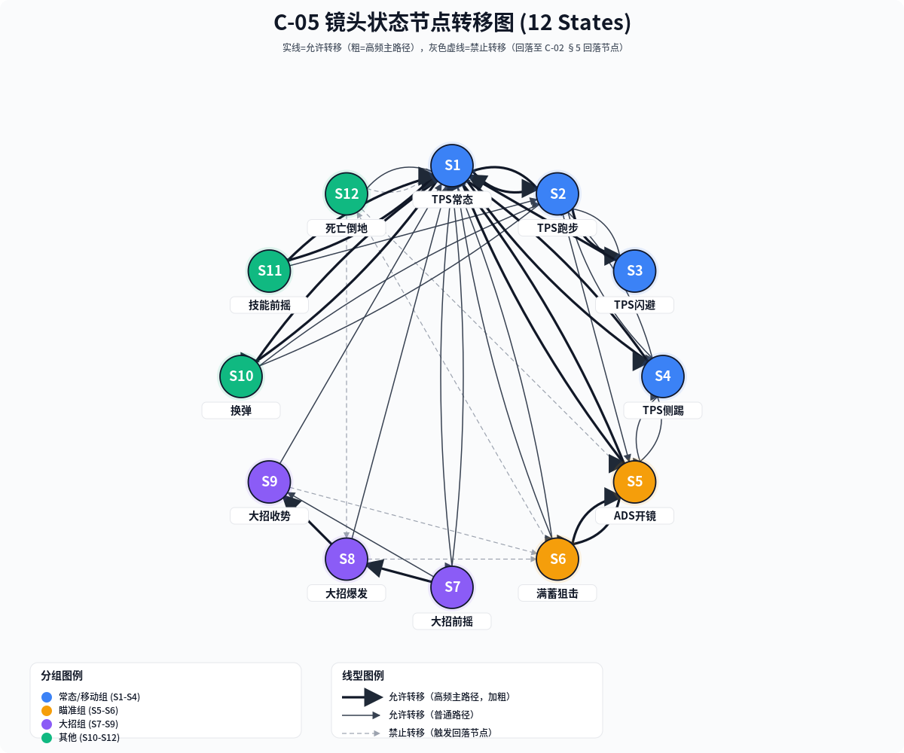
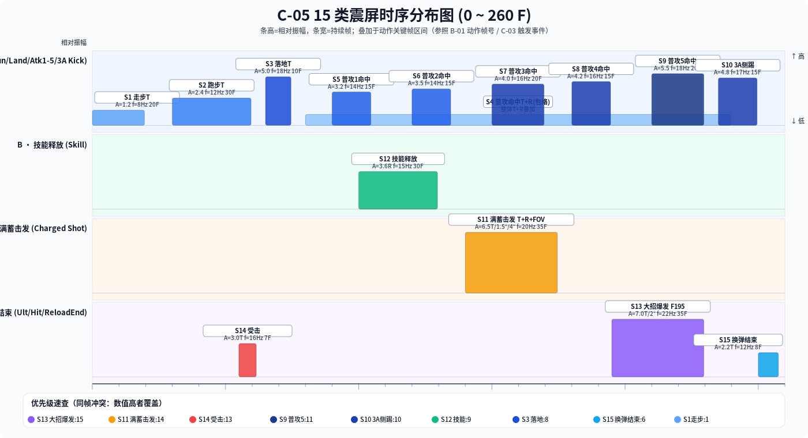

下表列出 12 种镜头状态的核心参数；各状态与 C-02 FSM 状态节点一一对应。常态/移动组 S1-S4 瞄准组 S5-S6 大招组 S7-S9 其他 S10-S12
| No. | 状态名 | FOV(度) | 相机距离(cm) | 相机高度(cm) | Yaw 跟随速度 | Pitch 跟随速度 | 碰撞半径(cm) | 俯仰限制(度) | 来源(C-02 节点) |
|---|---|---|---|---|---|---|---|---|---|
| 1 | TPS 常态 (Idle) | 60.0 | 200 | 60 | 12.0 | 8.0 | 12 | -60° ~ +70° | C-02 / S01 · IDLE |
| 2 | TPS 跑步 (Run) | 65.0 | 200 | 65 | 14.0 | 9.0 | 12 | -55° ~ +68° | C-02 / S02 · RUN |
| 3 | TPS 闪避 (Dodge) | 70.0 | 190 | 55 | 18.0 | 12.0 | 10 | -45° ~ +60° | C-02 / S03 · DODGE |
| 4 | TPS 侧踢 (3A Kick) | 65.0 | 195 | 58 | 13.0 | 8.5 | 11 | -55° ~ +68° | C-02 / S04 · KICK |
| 5 | ADS 开镜 (Aim Down Sight) | 35.0 | 80 | 15 | 6.0 | 4.0 | 6 | -45° ~ +55° | C-02 / S05 · ADS |
| 6 | 满蓄狙击 (Full Charge Scope) | 18.0 | 50 | 10 | 3.0 | 2.0 | 5 | -30° ~ +40° | C-02 / S06 · FULL_CHARGE |
| 7 | 大招前摇 (Ult Wind-Up) | 55.0 | 180 | 50 | 10.0 | 7.0 | 11 | -55° ~ +70° | C-02 / S10 · ULT_WINDUP |
| 8 | 大招爆发 (Ult Burst) | 50.0 | 260 | 90 | 20.0 | 14.0 | 14 | -70° ~ +80° | C-02 / S11 · ULT_BURST |
| 9 | 大招收势 (Ult End) | 60.0 | 210 | 60 | 11.0 | 7.5 | 12 | -60° ~ +70° | C-02 / S12 · ULT_END |
| 10 | 换弹 (Reload) | 62.0 | 200 | 60 | 10.0 | 7.0 | 12 | -55° ~ +70° | C-02 / S07 · RELOAD |
| 11 | 技能前摇 (Skill Wind-Up) | 58.0 | 190 | 58 | 11.0 | 8.0 | 11 | -55° ~ +70° | C-02 / S08 · SKILL_WINDUP |
| 12 | 死亡倒地 (Death) | 70.0 | 250 | 10 | 3.0 | 1.5 | 14 | -15° ~ +15° | C-02 / S13 · DEATH |

以 FOV 为横轴、相机距离为纵轴，散点大小映射碰撞半径，颜色映射分组。悬停查看高度、碰撞半径与 C-02 来源节点。
震屏类型分 Translation（相机平移，单位 mm）、Rotation（相机旋转，单位 °）、FOV（瞬时变焦，单位 °）三类；多类型叠加时按事件内顺序同时生效。衰减指数采用 A * exp(-λ * t) 形式，λ=衰减指数，t=秒。触发事件字段对齐 C-03 动画事件 Key。
| No. | 震屏名 | 类型 | 幅值 (Translation mm / Rotation ° / FOV °) | 频率(Hz) | 衰减指数 | 持续帧 | 触发事件 (C-03) | 优先级 |
|---|---|---|---|---|---|---|---|---|
| 1 | 走步震屏 (Walk) | T | T·X±0.4 / T·Y±1.2 | 8 | 1.2 | 20 | C-03 · EV_WALK_STEP × 每步 | 1 |
| 2 | 跑步震屏 (Run) | T | T·X±0.8 / T·Y±2.4 | 12 | 1.6 | 30 | C-03 · EV_RUN_STEP × 每步 | 2 |
| 3 | 落地震屏 (Land) | T | T·Z±5.0 (冲击向) | 18 | 4.0 | 10 | C-03 · EV_LAND | 8 |
| 4 | 普攻命中 · 通用包络 | T+R | T·XYZ±0.6 / R·Pitch±0.25° | 14 | 2.0 | 160 | C-03 · EV_ATK_COMBO (五连击包络) | 5 |
| 5 | 普攻 1 命中 | T+R | T·X±1.0 / T·Y±3.2 / R·Yaw±0.35° | 14 | 2.5 | 15 | C-03 · EV_ATK1_HIT (F95) | 6 |
| 6 | 普攻 2 命中 | T+R | T·X±1.1 / T·Y±3.5 / R·Yaw±0.40° | 14 | 2.6 | 15 | C-03 · EV_ATK2_HIT (F125) | 7 |
| 7 | 普攻 3 命中 | T+R | T·X±1.3 / T·Y±4.0 / R·Pitch±0.55° | 16 | 2.8 | 20 | C-03 · EV_ATK3_HIT (F158) | 8 |
| 8 | 普攻 4 命中 | T+R | T·X±1.4 / T·Y±4.2 / R·Pitch±0.60° | 16 | 3.0 | 15 | C-03 · EV_ATK4_HIT (F188) | 9 |
| 9 | 普攻 5 命中 | T+R | T·X±1.8 / T·Y±5.5 / R·Pitch±0.80° | 18 | 3.2 | 20 | C-03 · EV_ATK5_HIT (F218) | 11 |
| 10 | 3A 侧踢命中 | T+R | T·X±1.6 / T·Y±4.8 / R·Roll±0.70° | 17 | 3.0 | 15 | C-03 · EV_KICK_HIT (F242) | 10 |
| 11 | 满蓄击发 (Full Charge Fire) | T+R+FOV | T·Z±6.5 / R·Pitch±1.5° / FOV Δ=4.0°(瞬缩) | 20 | 4.2 | 35 | C-03 · EV_FULLCHARGE_FIRE | 14 |
| 12 | 技能释放 (Skill Cast) | R | R·Yaw±0.6° / Pitch±0.4° | 15 | 2.8 | 30 | C-03 · EV_SKILL_CAST | 9 |
| 13 | 大招爆发 F195 | T+R+FOV | T·XYZ±7.0 / R·All±2.0° / FOV Δ=-8.0°(爆发收拢) | 22 | 3.8 | 35 | C-03 · EV_ULT_BURST · F195 | 15 |
| 14 | 受击震屏 (Hit Taken) | T+R | T·XYZ±3.0 / R·Pitch±0.5° | 16 | 3.0 | 7 | C-03 · EV_HIT_TAKEN | 13 |
| 15 | 换弹结束 (Reload End) | T | T·Z±2.2 (推膛冲击) | 12 | 2.4 | 8 | C-03 · EV_RELOAD_END | 6 |

三类 FOV 过渡覆盖战斗中最常见的变焦通道；Blend 类型为 Replace（替换式，互斥）时将清零上一通道值，Additive（叠加式）仅用于 FOV 震屏（§3 第 11、13 项）。缓动曲线统一引用 FEasingLibrary 同名曲线。
| No. | 过渡名称 | 起始 FOV | 目标 FOV | 过渡帧数 | 缓动曲线 | Blend 类型 | 典型触发链路 |
|---|---|---|---|---|---|---|---|
| F1 | 常态 ↔ ADS 开镜 | 60° ↔ 35° | 35° ↔ 60° | 18F / 14F | EaseInOutSine 正弦缓入缓出 | Replace | S1(Idel) → S5 → S1；按住右键/松开右键 |
| F2 | 常态 ↔ 满蓄狙击 | 60° ↔ 18° | 18° ↔ 60° | 36F / 10F | Cubic 三次方缓入 / 缓出 | Replace | S5(ADS) 蓄力满 → S6；松键/击发 → S5 |
| F3 | 常态 ↔ 大招爆发 | 60° → 55° → 50° → 60° | — | 12F / 24F / 30F | Linear + 前段 EaseInOutSine | Replace（爆发期间叠加 Additive FOV 震屏） | S1 → S7(Ult前摇) → S8(Ult爆发) → S9(Ult收势) → S1 |
行=源状态，列=目标状态。A=主路径（高频） B=允许（普通） ×=禁止（回落） -=自身
| 源 ↓ / 目标 → | S1常态 | S2跑步 | S3闪避 | S4侧踢 | S5ADS | S6满蓄 | S7大前 | S8大爆 | S9大收 | S10换弹 | S11技能 | S12死亡 |
|---|---|---|---|---|---|---|---|---|---|---|---|---|
| S1 常态 | - | A | B | A | A | B | B | × | B | A | A | B |
| S2 跑步 | A | - | A | B | B | × | × | × | × | B | B | B |
| S3 闪避 | A | B | - | × | × | × | × | × | × | × | × | B |
| S4 侧踢 | A | B | × | - | B | × | × | × | × | × | × | B |
| S5 ADS | A | B | × | B | - | A | × | × | × | × | × | B |
| S6 满蓄 | B | × | × | × | A | - | × | × | × | × | × | B |
| S7 大招前摇 | B | × | × | × | × | × | - | A | B | × | × | × |
| S8 大招爆发 | B | × | × | × | × | × | × | - | A | × | × | × |
| S9 大招收势 | A | B | × | × | B | × | × | × | - | B | B | × |
| S10 换弹 | A | B | × | × | B | × | × | × | × | - | × | B |
| S11 技能前摇 | A | B | × | × | × | × | × | × | × | × | - | B |
| S12 死亡倒地 | B | × | × | × | × | × | × | × | × | × | × | - |
编译期/运行期开关 C05_DEBUG=1 启用；=0 时所有日志与可视化通道完全剥离（避免 Release 泄漏）。
| No. | LogTag | 触发时机 | 日志内容（字段） | 等级 |
|---|---|---|---|---|
| D1 | C05_STATE_ENTER | 镜头状态 Enter 回调 | FrameNo, FromState, ToState, BlendFrames, Easing | Info |
| D2 | C05_STATE_EXIT | 镜头状态 Exit 回调 | FrameNo, FromState, DurationFrames, FOV_Drift(°) | Info |
| D3 | C05_SHAKE_TRIGGER | 任一震屏事件进入队列 | FrameNo, ShakeID, Type, Priority, DurationF, Amplitude | Info |
| D4 | C05_SHAKE_OVERFLOW | 同帧冲突覆盖或队列深度≥4 | FrameNo, WinID, LoserIDs, QueueDepth | Warn |
| D5 | C05_STATE_ILLEGAL | §5 禁止转移触发 | FrameNo, FromState, IllegalTo, FallbackTo(C-02 §5) | Error |
| D6 | C05_PARAM_OVERRANGE | 运行参数超出 ±5% 默认值 | Field, Default, Actual, Delta%, Source(CodeLine) | Warn；超出必须在本节「调参记录」留档 |
| # | 变更字段 | 默认值 | 变更值 | Δ% | 变更人 | 日期 | 回归用例/说明 |
|---|---|---|---|---|---|---|---|
| — | — | — | — | — | — | — | （本行为占位；首条记录覆盖本行） |